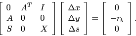
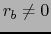
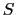
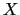
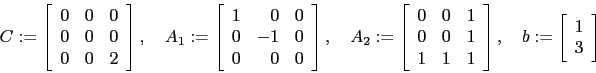
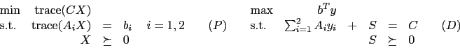
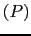
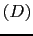

Assume ,  and  are positive definite diagonal matrices, and

The primal and dual semidefinite programs are

Show that both  and  are feasible, but that the optimal value of is not achieved.
| John Mitchell | |
| Amos Eaton 325 | |
| x6915. | |
| mitchj at rpi dot edu | |
| Office hours: Mondays, 1pm - 2pm. Thursdays, 1pm - 3pm. |